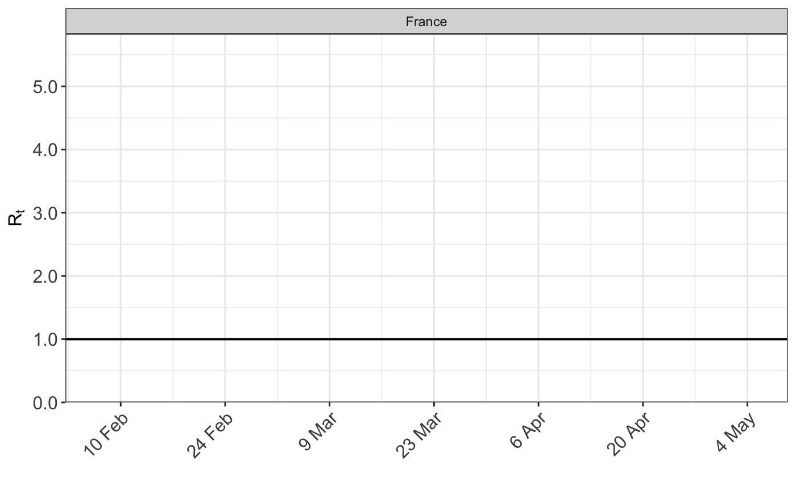
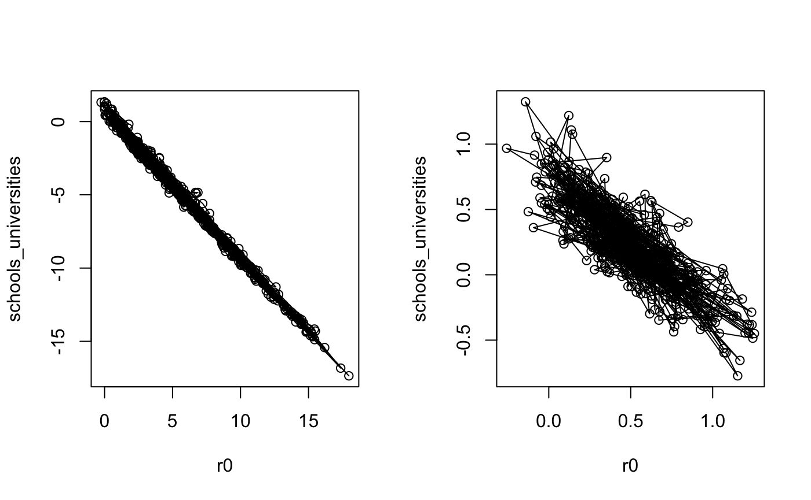

For some sample data and MCMC starting values, the model stays in a part of the parameter space which induces herd immunity. This is likely because daily death and case counts towards the end of the observed period can be low. Such low counts can be explained by policies surpressing the virus, or alternatively by the virus spreading through the entire susceptible population. Herd immunity can act as a local mode that is difficult to escape, even if it poorly fits the observed data at the peak of the epidemic.
Data from the SARS 2003 outbreak is used as an example, and we show how the convergence problem can potentially be overcome. The data is provided by the R package @EpiEstim.
First load and inspect the data.
library(epidemia) library(EpiEstim) library(plotly) data("SARS2003") options(mc.cores = parallel::detectCores()) print(SARS2003)
## $incidence
## [1] 1 0 0 1 0 0 2 0 2 2 1 1 1 0 0 0 4 1
## [19] 2 4 13 23 35 26 12 17 19 17 28 23 27 27 11 21 21 25
## [37] 31 103 96 69 58 48 33 25 43 37 30 29 28 34 34 32 24 17
## [55] 16 23 18 15 11 19 16 9 17 14 6 4 8 9 11 11 11 6
## [73] 13 3 8 2 4 4 6 4 5 4 8 2 3 2 5 3 3 4
## [91] 3 1 2 0 1 3 3 1 1 1 1 1 1 1 0 2 0
##
## $si_distr
## [1] 0.000 0.001 0.012 0.043 0.078 0.104 0.117 0.116 0.108 0.094 0.078 0.063
## [13] 0.049 0.038 0.028 0.021 0.015 0.011 0.008 0.005 0.004 0.003 0.002 0.001
## [25] 0.001Set up the data argument for epim as follows. Here it is assumed that seeding of infections begins 20 days prior to the first observed cases.
data <- data.frame( country = "A", date = as.Date("2003-01-01") + seq(0,length(SARS2003$incidence) + 19), cases = c(rep(NA,20), SARS2003$incidence) ) data$week <- format(data$date, "%V")
The reproduction number is modeled using a weekly random walk.
A model is required to link infections to the observations. It is assumed that close to all infections are recorded as a case, and that this happens with equal probability in the four days after infection.
cases <- epiobs( formula = cases(country,date) ~ 1, prior_intercept = rstanarm::normal(1, 0.01), link = "identity", i2o = rep(1/4,4) )
Now we collect all arguments for epim, and sample.
args <- list( rt = rt, obs = list(cases), data = data, algorithm = "sampling", sampling_args = list(iter=500, chains=4, seed=12345), seed_days = 7, pops = data.frame(countrty="A", pop=1e6), si = SARS2003$si_distr, prior_tau = rstanarm::exponential(rate=4) ) fm <- do.call(epim, args)
## Warning: The largest R-hat is 1.78, indicating chains have not mixed.
## Running the chains for more iterations may help. See
## http://mc-stan.org/misc/warnings.html#r-hat## Warning: Bulk Effective Samples Size (ESS) is too low, indicating posterior means and medians may be unreliable.
## Running the chains for more iterations may help. See
## http://mc-stan.org/misc/warnings.html#bulk-ess## Warning: Tail Effective Samples Size (ESS) is too low, indicating posterior variances and tail quantiles may be unreliable.
## Running the chains for more iterations may help. See
## http://mc-stan.org/misc/warnings.html#tail-ess## Warning: Markov chains did not converge! Do not analyze results!The warnings above indicate convergence problems. This becomes clearer when plotting the reproduction number and cases. The reproduction number remains high until mid-march when it falls due to a herd immunity effect. Looking at the posterior predictive distribution for the daily cases, it is clear that this looks nothing like the true data.
We now show one method of resolving this. epim has an init_run argument. If specified, this will do a short initial run fitting to the cumulative cases numbers. This changes the shape of the posterior distribution, allowing the sampler to move out of the local mode causing herd immunity. The output of this initial run is used to set the initial values in the MCMC chain for the full run.
args$init_run = T fm <- do.call(epim, args)
## [1] "Prefit to obtain reasonable starting values"
##
## SAMPLING FOR MODEL 'epidemia_base' NOW (CHAIN 1).
## Chain 1:
## Chain 1: Gradient evaluation took 0.000513 seconds
## Chain 1: 1000 transitions using 10 leapfrog steps per transition would take 5.13 seconds.
## Chain 1: Adjust your expectations accordingly!
## Chain 1:
## Chain 1:
## Chain 1: WARNING: There aren't enough warmup iterations to fit the
## Chain 1: three stages of adaptation as currently configured.
## Chain 1: Reducing each adaptation stage to 15%/75%/10% of
## Chain 1: the given number of warmup iterations:
## Chain 1: init_buffer = 7
## Chain 1: adapt_window = 38
## Chain 1: term_buffer = 5
## Chain 1:
## Chain 1: Iteration: 1 / 100 [ 1%] (Warmup)
## Chain 1: Iteration: 10 / 100 [ 10%] (Warmup)
## Chain 1: Iteration: 20 / 100 [ 20%] (Warmup)
## Chain 1: Iteration: 30 / 100 [ 30%] (Warmup)
## Chain 1: Iteration: 40 / 100 [ 40%] (Warmup)
## Chain 1: Iteration: 50 / 100 [ 50%] (Warmup)
## Chain 1: Iteration: 51 / 100 [ 51%] (Sampling)
## Chain 1: Iteration: 60 / 100 [ 60%] (Sampling)
## Chain 1: Iteration: 70 / 100 [ 70%] (Sampling)
## Chain 1: Iteration: 80 / 100 [ 80%] (Sampling)
## Chain 1: Iteration: 90 / 100 [ 90%] (Sampling)
## Chain 1: Iteration: 100 / 100 [100%] (Sampling)
## Chain 1:
## Chain 1: Elapsed Time: 10.0699 seconds (Warm-up)
## Chain 1: 10.5777 seconds (Sampling)
## Chain 1: 20.6476 seconds (Total)
## Chain 1:## Warning: There were 2 transitions after warmup that exceeded the maximum treedepth. Increase max_treedepth above 10. See
## http://mc-stan.org/misc/warnings.html#maximum-treedepth-exceeded## Warning: Examine the pairs() plot to diagnose sampling problems## Warning: The largest R-hat is NA, indicating chains have not mixed.
## Running the chains for more iterations may help. See
## http://mc-stan.org/misc/warnings.html#r-hat## Warning: Bulk Effective Samples Size (ESS) is too low, indicating posterior means and medians may be unreliable.
## Running the chains for more iterations may help. See
## http://mc-stan.org/misc/warnings.html#bulk-ess## Warning: Tail Effective Samples Size (ESS) is too low, indicating posterior variances and tail quantiles may be unreliable.
## Running the chains for more iterations may help. See
## http://mc-stan.org/misc/warnings.html#tail-ess## Warning: Bulk Effective Samples Size (ESS) is too low, indicating posterior means and medians may be unreliable.
## Running the chains for more iterations may help. See
## http://mc-stan.org/misc/warnings.html#bulk-essNote that the R-hat warning above pertains to the initial run, and does not signal a problem for the full run. The effective sample size warnings are to be expected as we are doing only 500 iterations. Plotting shows a more reasonable fit to the data.
In our experience, a leading cause of convergence problems in the model fitting stage is collinearity between the predictors explaining the time-varying reproduction number. This can lead to divergent transitions and long sampling times.
Take the example of modeling the effect of several non-pharmaceutical interventions (NPIs). There are two primary reasons why these effects can be highly confounded. Most obviously, the interventions will often take place in quick succession, and so they will be collinear. The second cause is the time distribution from infection to an event - for example a death. This is often such that conditional on observing a death at a particular time, there is a wide range of plausible dates at which the individual was infected. Any effects on the reproduction number from interventions occuring close to one-another will be smoothed over in the death data, and the signal as to which intervention actually had an effect becomes weaker.
One possible remedy for this is to pool the effects over different groups. This incorporates more data to delineate each effect. Another approach is to regularize the problem by using more informative priors. Of course this should be done in a principled manner; for example by using results from previous studies.
In this section, we illustrate this phenomenon with a simulated dataset. The code below simulates death data using an assumed initial reproduction number, and assumed effect sizes for the schools_universities and lockdown NPIs. The aim will be to recover the parameters under which the data was simulated.
The code below considers France during the covid-19 pandemic, parameterising the reproduction number as a function of the lockdown NPI, and closing schools/universities. For our purposes, we assume the counterfactual scenario where the schools/universites NPI came into effect on 1st March 2020.
library(dplyr) data("EuropeCovid") args <- EuropeCovid w <- args$data$country == "France" & args$data$date >= as.Date("2020-03-01") args$data[w, "schools_universities"] = 1 args$group_subset <- "France" args$algorithm <- "sampling" args$sampling_args <- list(iter = 1e3, seed=12345) # setting prior effect sizes args$rt <- epirt( formula = R(country, date) ~ schools_universities + lockdown, prior = rstanarm::normal(location = c(0.5,1.5), scale = 0.01), prior_intercept = rstanarm::normal(location=0, scale=0.01), r0 = 3 ) args$prior_PD <- TRUE fm <- do.call("epim", args)
Above, the initial reproduction number is close to 3, and the coefficients for the schools/universities and lockdown NPIs of around 0.5 and 1.5 respectively. The assumed reproduction number looks as follows.
plot_rt(fm)

Daily death counts are simulated under this model, and used in place of the true death data.
obs <- posterior_predict(fm, type = "deaths") obs <- as.integer(colMeans(obs$draws)) w <- args$data$country == "France" args$data[w,"deaths"] <- obs
Fitting the model to the simulated data with uninformative priors for the initial reproduction number and effects.
# fit the model with uninformative priors args$prior_PD <- FALSE args$rt <- epirt( formula = R(country, date) ~ schools_universities + lockdown, prior = rstanarm::normal(scale=10), prior_intercept = rstanarm::normal(scale=10) ) system.time(fm2 <- do.call("epim", args))
## Warning: There were 869 transitions after warmup that exceeded the maximum treedepth. Increase max_treedepth above 10. See
## http://mc-stan.org/misc/warnings.html#maximum-treedepth-exceeded## Warning: Examine the pairs() plot to diagnose sampling problems## user system elapsed
## 963.268 6.938 351.863Notice the warnings over exceeding the maximum-tree depth and the long run time. The reason for this will become clear soon. But first we attempt to regularize the problem by assuming more information on the initial reproduction number.
args$rt <- epirt( formula = R(country, date) ~ schools_universities + lockdown, prior = rstanarm::normal(scale=0.5), prior_intercept = rstanarm::normal(scale=0.5) ) system.time(fm3 <- do.call(epim, args))
## user system elapsed
## 337.824 3.180 129.336This seems more stable. As shown below, the problem is caused by posterior correlation between the initial reproduction rate and the effect size of the schools/universities NPI. This NPI occurs before there is much informative data on deaths, and when the number of infections is likely to be quite low. Therefore it is difficult to distinguish whether early on in the disease there was a high reproduction rate and a large effect from the NPI, or a lower initial reproduction rate and a less substantial effect.
We now plot the posterior correlations between these two parameters.
par(mfrow=c(1,2)) mat <- as.array(fm2) r0 <- mat[,1,"R|(Intercept)"] schools_universities <- mat[,1,"R|schools_universities"] plot(r0, schools_universities, type = "o") mat <- as.array(fm3) r0 <- mat[,1,"R|(Intercept)"] schools_universities <- mat[,1,"R|schools_universities"] plot(r0, schools_universities, type = "o")
 The left hand plot shows the posterior distribution from fm2, where less informative priors were used. The divergent transitions appear to be caused by the small step-size required to traverse the distribution horizontally/vertically, and the large step size desired for traversing the diagonal; there is a ridge in the posterior. For more information on why this can pose a problem for Hamiltonian Monte Carlo, please refer to the stan user guide. Using stronger prior information reduces the posterior correlation and the sampler explores the space better, as shown in the right hand plot.
print(fm2, digits=2)
##
## Rt regression parameters:
## -----
## coefficients:
## Median MAD_SD
## R|(Intercept) 4.30 4.02
## R|schools_universities -3.79 4.05
## R|lockdown 0.14 0.32
##
## deaths regression parameters:
## -----
## coefficients:
## Median MAD_SD
## deaths|(Intercept) 0.01 0.00
## deaths|reciprocal dispersion 20.02 3.88
##
## Other model parameters:
## -----
## Median MAD_SD
## seeds[France] 1.48 0.56
## tau 8.41 8.98print(fm3, digits=2)
##
## Rt regression parameters:
## -----
## coefficients:
## Median MAD_SD
## R|(Intercept) 0.46 0.33
## R|schools_universities 0.19 0.37
## R|lockdown 0.04 0.24
##
## deaths regression parameters:
## -----
## coefficients:
## Median MAD_SD
## deaths|(Intercept) 0.01 0.00
## deaths|reciprocal dispersion 20.16 4.10
##
## Other model parameters:
## -----
## Median MAD_SD
## seeds[France] 8.51 3.93
## tau 17.76 14.90